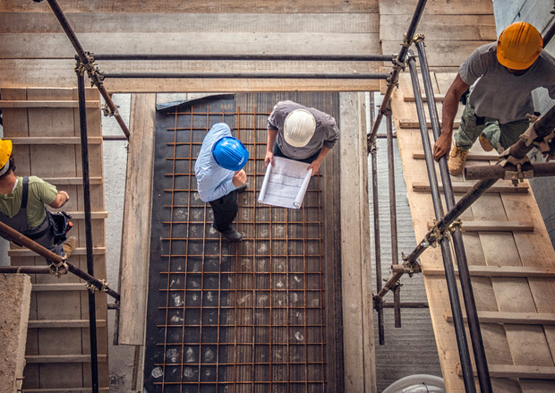
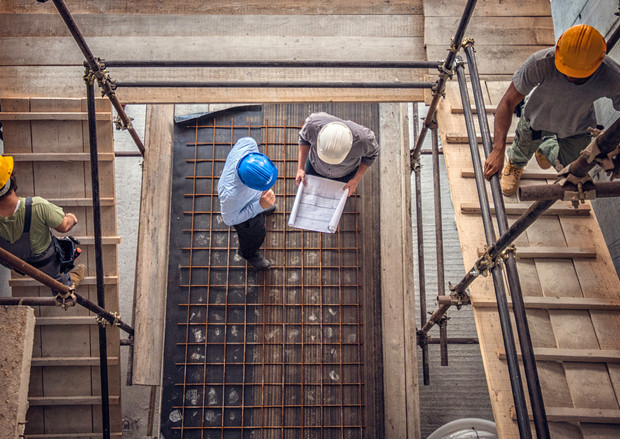

Servicios de Obra
Convertimos en realidad las ideas y proyectos de nuestros clientes, desde la documentación técnica hasta la entrega llave en mano de la obra.
- Proyecto y planos municipales
- Cómputo y presupuesto de materiales
- Dirección de la obra hasta su finalización
- Diseño y cálculo de instalaciones en edificios (sanitarias, eléctricas, gas y climatización)
- Refacciones edilicias


 
